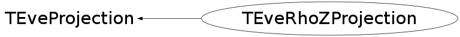

class TEveRhoZProjection: public TEveProjection
Transformation from 3D to 2D. X axis represent Z coordinate. Y axis have value of radius with a sign of Y coordinate.
Function Members (Methods)
public:
protected:
| void | TEveProjection::PreScaleVariable(Int_t dim, Float_t& v) |
Data Members
public:
| enum TEveProjection::EPType_e { | kPT_Unknown | |
| kPT_RPhi | ||
| kPT_RhoZ | ||
| kPT_3D | ||
| kPT_End | ||
| }; | ||
| enum TEveProjection::EPProc_e { | kPP_Plane | |
| kPP_Distort | ||
| kPP_Full | ||
| }; | ||
| enum TEveProjection::EGeoMode_e { | kGM_Unknown | |
| kGM_Polygons | ||
| kGM_Segments | ||
| }; |
public:
| static Float_t | TEveProjection::fgEps | resolution of projected points |
| static Float_t | TEveProjection::fgEpsSqr | square of resolution of projected points |
protected:
| TEveVector | TEveProjection::fCenter | center of distortionprivate: |
| bool | TEveProjection::fDisplaceOrigin | displace point before projection |
| Float_t | TEveProjection::fDistortion | distortion |
| Float_t | TEveProjection::fFixR | radius from which scaling remains constant |
| Float_t | TEveProjection::fFixZ | z-coordinate from which scaling remains constant |
| TEveProjection::EGeoMode_e | TEveProjection::fGeoMode | strategy of polygon projection (what to try first) |
| Float_t | TEveProjection::fMaxTrackStep | maximum distance between two points on a track |
| TString | TEveProjection::fName | name |
| Float_t | TEveProjection::fPastFixRFac | relative scaling factor beyond fFixR as 10^x |
| Float_t | TEveProjection::fPastFixRScale | relative scaling beyond fFixR |
| Float_t | TEveProjection::fPastFixZFac | relative scaling factor beyond fFixZ as 10^x |
| Float_t | TEveProjection::fPastFixZScale | relative scaling beyond fFixZ |
| vector<TEveProjection::PreScaleEntry_t,allocator<TEveProjection::PreScaleEntry_t> > | TEveProjection::fPreScales[3] | scaling before the distortion |
| Float_t | TEveProjection::fScaleR | scale factor to keep projected radius at fFixR fixed |
| Float_t | TEveProjection::fScaleZ | scale factor to keep projected z-coordinate at fFixZ fixed |
| TEveProjection::EPType_e | TEveProjection::fType | type |
| Bool_t | TEveProjection::fUsePreScale | use pre-scaling |
private:
| TEveVector | fProjectedCenter | projected center of distortion. |
Class Charts
{kind=link}
{kind=link}
{kind=link}
{kind=link}

Function documentation
void ProjectPoint(Float_t& x, Float_t& y, Float_t& z, Float_t d, TEveProjection::EPProc_e proc = kPP_Full)
Project point.
void SetDirectionalVector(Int_t screenAxis, TEveVector& vec)
Get direction in the unprojected space for axis index in the projected space. This is virtual method from base-class TEveProjection.
Bool_t AcceptSegment(TEveVector& v1, TEveVector& v2, Float_t tolerance) const
Check if segment of two projected points is valid. Move slightly one of the points if by shifting it by no more than tolearance the segment can become acceptable.
Int_t SubSpaceId(const TEveVector& v) const
Return sub-space id for the point. 0 - upper half-space 1 - lowwer half-space